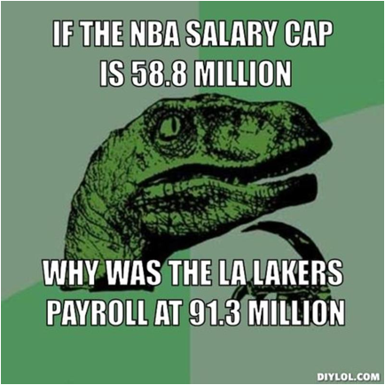

The Basics of the Capology

How exactly is the salary cap computed. How does it work and what are the exceptions to the rules
The Basics of the Cap:
Salary Cap: The league has a cap on how much teams can spend. It is adjusted each season at the Start of the July Moratorium (July 1st)
- A team can sign free agents to player contracts up to the salary cap.
- The cap number is determined by the projected amount of Basketball Related Income (BRI) and benefits for the upcoming season
- The salary cap number for this year (2014-2015) is $63.065 million which is up 7.5% from last season’s (2013-2014) cap of $58.679 million.
- The floor or least amount a team can spend on player contracts this year is 90%, which is $56.759 million. If a team does not reach the floor, by the end of the league year then they pay the difference between the floor and their current cap equally to the players on their roster
Luxury Tax: The league has a “Soft Cap” which means that teams can exceed the salary cap under certain conditions; however exceeding the salary cap triggers luxury tax payments
Team salary above tax level |
Non-repeater |
Repeater |
|||
Lower |
Upper |
Tax rate |
Incremental maximum |
Tax rate |
Incremental maximum |
$0 |
$4,999,999 |
$1.50 |
$7.5 million |
$2.50 |
$12.5 million |
$5,000,000 |
$9,999,999 |
$1.75 |
$8.75 million |
$2.75 |
$13.75 million |
$10,000,000 |
$14,999,999 |
$2.50 |
$12.5 million |
$3.50 |
$17.5 million |
$15,000,000 |
$19,999,999 |
$3.25 |
$16.25 million |
$4.25 |
$21.25 million |
$20,000,000 |
N/A |
$3.75, and increasing $.50 for each additional $5 million |
N/A |
$4.75, and increasing $.50 for each additional $5 million |
N/A |
- Tax level is determined by taking 53.51% of projected BRI subtracting projected benefits, and dividing by the number of teams in the league
- The luxury tax threshold for this season is 76.829 million, which is an increase of 7.1 percent over last season’s figure of 71.748 million.
- The tax apron is always 4 million above the luxury tax, so this year it is 80.829 million. Teams that are above the apron lose certain rights. For example, they cannot use certain exceptions or do a sign-and-trade.
The Basics of Exceptions:
Larry Bird Exception: Allows a team to exceed the cap in order to resign their own free agents
- Player qualifies for “Bird rights” if he has been under contract with a team for three years
- Bird rights are tradeable
Early Bird Exception: Allows a team to exceed the cap in order to resign their own free agents
- Player qualifies for “Early bird rights” if he has been under contract with a team for two years
- You can resign free agent for up to 175% of his previous seasons salary (not over the max) or 104.5%, whichever is greater
- Contract must be at least two years in length
- Teams can match any offer sheet that restricted free agents who qualify for the early bird exception receives from another team
Non-Bird Exception: Allows a team to exceed the cap in order to resign their own free agents
- Player qualifies for this exception if he is a "Non-Qualifying Veteran Free Agent"
- This exception allows a team to re-sign its own free agent to a salary starting at up to 120% of his salary in the previous season (not over the maximum salary), 120% of the minimum salary, or the amount needed to tender a qualifying offer (if the player is a restricted free agent), whichever is greater.
- Raises are limited to 4.5% of the salary in the first year of the contract
- Contracts are limited to four seasons when this exception is used.
|
Room Exception |
Bi-Annual |
Full MLE |
Taxpayer MLE |
2013/2014 |
$2,652,250 |
$2,077,000 |
$5,150,000 |
$3,182,700 |
2014/2015 |
$2,771,601 |
$2,170,465 |
$5,381,750 |
$3,325,922 |
2015/2016 |
N/A |
N/A |
$5,613,500 |
$3,469,143 |
2016/2017 |
N/A |
N/A |
$5,845,250 |
N/A |
Total |
$5,423,851 |
$4,247,465 |
$21,999,500 |
$9,977,765 |
Non-Taxpayer Midlevel Exception (MLE): An exception that allows a team over the salary cap to sign free agents
- Available to teams that are below the apron and would not go above it after using the exception
- Can’t be used by teams who have used Bi-annual, Taxpayer, or Room exceptions
- Can be used every year if team qualifies
- Contracts up to 4 years in length with raises up to 4.5% of the salary in the first year
- The exception can be split among multiple players
- Once this exception has been used the apron becomes a hard cap (team cannot exceed it at any point during the season)
Taxpayer Mid-Level Exception (MLE): An exception that allows a team over the salary cap to sign free agents
- Available to teams that are below the apron and would not go above it after using the exception
- Can’t be used by teams who have used Bi-annual, Non-taxpayer, or Room exceptions
- It cannot be used if the team has received a player that season in a sign-and-trade transaction
- Can be used every year if team qualifies
- Contracts up to 3 years in length with raises up to 4.5% of the salary in the first year
- The exception can be split among multiple players
- Once this exception has been used the apron becomes a hard cap (team cannot exceed it at any point during the season)
Room Level Exception: An exception that is available to teams that drop far enough below the cap to use cap room, and lose their other exceptions
- Can’t be used by teams who have used Bi-annual, Non-taxpayer, or Taxpayer exceptions
- Can be used every year if team qualifies
- Contracts up to 2 years in length with raises up to 4.5% of the salary in the first year
- The exception can be split among multiple players
Bi-Annual Exception: An exception that allows a team over the salary cap to sign free agents
- Available to teams that are below the apron and would not go above it after using the exception
- Can’t be used by teams who have used Taxpayer, Non-taxpayer, or Room exceptions
- Cannot be used two years in a row
- Contracts up to 2 years in length with raises up to 4.5% of the salary in the first year
- The exception can be split among multiple players
- Once this exception has been used the apron becomes a hard cap (team cannot exceed it at any point during the season)
Rookie Exception: Allows teams to sign their first round draft picks to “rookie scale” contracts even if they will be over the cap as a result
The Basics of Player Salary’s:
Years in the NBA |
Defined Maximum Salary |
0-6 |
25% of cap |
7-9 |
30% of cap |
10+ |
35% of cap |
Rookie Minimum: The Minimum Salary for a player in the league with no experience this year is $507,336. The minimum amount for each player is based on their number of years in the league
Veteran Minimum: Veterans with 10+ years in the league have a minimum salary of $1,448,490
Maximum Salary: Teams can sign their own free agents to maximum salary deals of 5 years with raises of 7.5%; whereas, teams can sign other teams free agents for a max salary of 4 years in length with raises of 4.5%